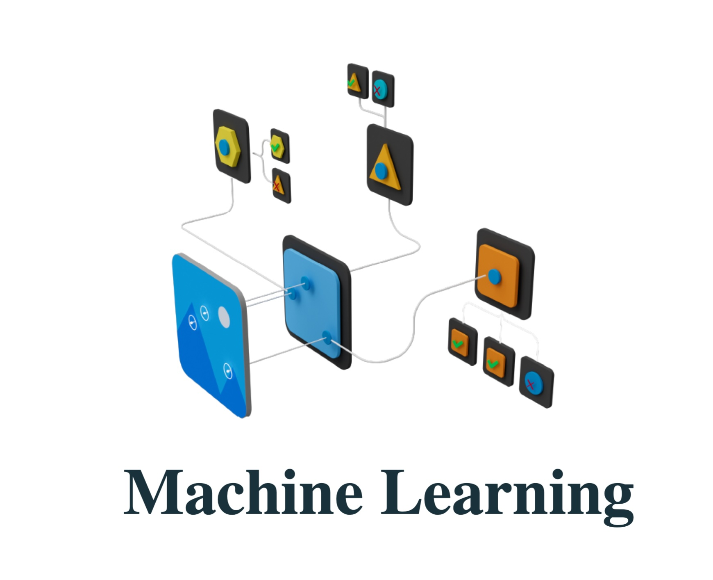

1. Introduction to Machine Learning
- Basic concepts and definitions
- Types of Machine Learning: supervised, unsupervised, and reinforcement learning
2. Machine Learning Libraries for Mobile Apps
- TensorFlow Lite for mobile
- Core ML for iOS
- ML Kit for Firebase
3. Basic Concepts of Neural Networks
- Understanding neurons and layers
- Feedforward and backpropagation
4. Creating a Simple Machine Learning Model
- Building a basic model using a high-level API (e.g., Keras)
- Training and evaluating the model
5. Introduction to Mobile App Integration
- Overview of integrating ML models into mobile apps
- Choosing the right framework for your project
6. Image Recognition in Mobile Apps
- Building an image classification model
- Integrating the model into a mobile app
7. Natural Language Processing (NLP) in Mobile Apps
- Basics of text processing in ML
- Creating a simple language model
8. Voice Recognition in Mobile Apps
- Introduction to speech-to-text and text-to-speech
- Using pre-trained models for voice recognition
9. Mobile App Anomaly Detection
- Detecting anomalies in mobile app data
- Implementing anomaly detection algorithms
10. Predictive Analytics in Mobile Apps
- Using ML for predicting user behavior
- Implementing recommendation systems
11. Transfer Learning for Mobile Apps
- Leveraging pre-trained models for specific tasks
- Fine-tuning models for mobile app requirements
12. Privacy and Security Considerations
- Handling sensitive data in mobile ML applications
- Implementing secure communication with ML services
13. Optimizing Models for Mobile Devices
- Model quantization for reduced size
- Model optimization for improved inference speed
14. Real-time Object Detection in Mobile Apps
- Implementing object detection models
- Integrating real-time detection into mobile apps
15. Model Interpretability and Explainability
- Understanding model predictions
- Techniques for explaining ML model decisions
16. A/B Testing and Experimentation
- Using ML for A/B testing in mobile apps
- Analyzing experiment results
17. Continuous Learning and Model Updates
- Implementing mechanisms for updating models in mobile apps
- Handling versioning and compatibility
18. Edge Computing and On-Device ML
- Overview of on-device ML capabilities
- Implementing edge computing for mobile ML applications
19. Building a Custom ML Model for Mobile Apps
- Steps to create a custom model for specific use cases
- Training and deploying the custom model in a mobile app
20. Documentation and Resources
- Recommended reading and resources for further learning
- Documentation for popular ML libraries in the mobile development context